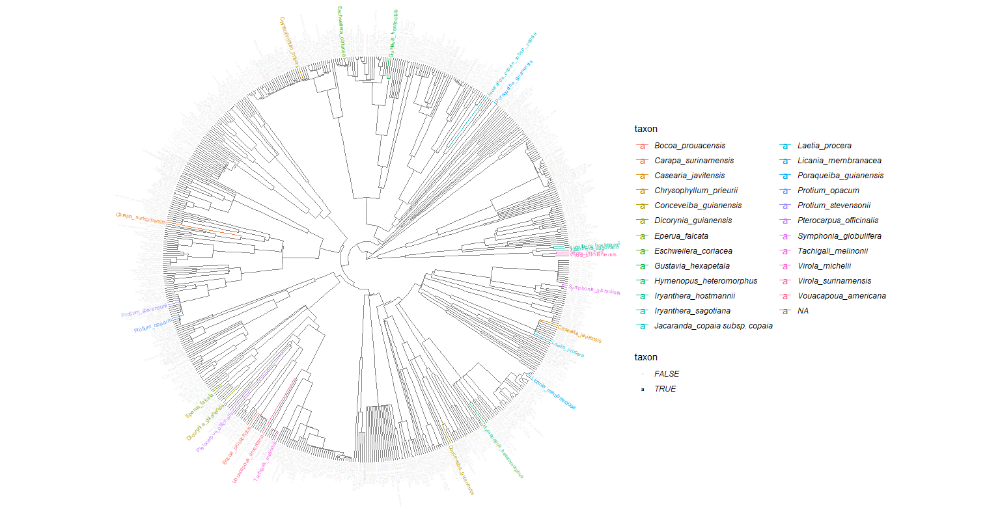

Chapter 4 Graph Indvals
Species with high IndVals means that the species prefers the habitat (but not exclusive, hence the word preference), but are also a high probability of being sampled in the given habitat.
Our analysis identified 9 generalist taxa, 8 SFF specialist taxa and 7 terra firme specialist taxa.
4.0.1 More details about IndVal
IndVal used by other projects (ex. INSERER BIBLIO TerSteege et al 2013). The relative abundance and the relative frequency must be combined by multiplication because they represent independent information about the species distribution. X100 for a percentage. The index is max when all individuals of a species are found in a single group of sites or when the species occurs in all sites of that group. The statistical significance of the species indicator values is evaluated using a randominization procedure. Significance of habitat association was estimated by a Monte Carlo procedure that reassigns species densities and frequencies to habitats 1000 times. It therefore gives an ecological meaning as it compares the typologies.
Other indicators:
- Contrary to TWINSPAN, this indicator index for a given species is independent of other species relative abundances and there is no need for pseudospecies
- Species richness (sensitive to several factors)
- Oliviera species association to the topographic and edaphic gradient : weighted the HAND or P concentration of the plot by the abundance of the species in the plot. Divided by the number of individuals of the species in all plots.
4.0.2 Chosen species
Our analysis identified 9 generalist taxa, 8 SFF specialist taxa and 7 terra firme specialist taxa.
| Family | Genus | Species | Type | Paracou | Bafog | Kaw |
|---|---|---|---|---|---|---|
| Fabaceae | Bocoa | prouacensis | Generalists | 15 | 10 | 3 |
| Sapotaceae | Chrysophyllum | prieurii | Generalists | 17 | 12 | 1 |
| Euphorbiaceae | Conceveiba | guianensis | Generalists | 20 | 16 | 0 |
| Lecythidaceae | Eschweilera | coriacea | Generalists | 20 | 19 | 10 |
| Chrysobalanaceae | Hymenopus | heteromorphus | Generalists | 22 | 14 | 8 |
| Bignoniaceae | Jacaranda | copaia subs. copaia | Generalists | 20 | 13 | 15 |
| Burseraceae | Protium | stevensonii | Generalists | 12 | 12 | 1 |
| Fabaceae | Tachigali | melinonii | Generalists | 16 | 16 | 13 |
| Myristicaceae | Virola | michelii | Generalists | 11 | 16 | 6 |
| Meliaceae | Carapa | guianensis | SF specialists | 0 | 0 | 10 |
| Meliaceae | Carapa | surinamensis | SF specialists | 10 | 1 | 0 |
| Fabaceae | Eperua | falcata | SF specialists | 11 | 0 | 10 |
| Myristicaceae | Iryanthera | hostmannii | SF specialists | 9 | 10 | 10 |
| Salicacea | Laetia | procera | SF specialists | 9 | 10 | 10 |
| Burseraceae | Protium | opacum subsp. rabelianum | SF specialists | 10 | 0 | 11 |
| Fabaceae | Pterocarpus | officinalis | SF specialists | 10 | 10 | 10 |
| Clusiaceae | Symphonia | globulifera | SF specialists | 10 | 9 | 10 |
| Myristicaceae | Virola | surinamensis | SF specialists | 6 | 10 | 10 |
| Salicacea | Casearia | javitensis | TF specialists | 11 | 8 | 0 |
| Fabaceae | Dicorynia | guianensis | TF specialists | 6 | 6 | 0 |
| Lecythidaceae | Gustavia | hexapetala | TF specialists | 5 | 9 | 5 |
| Myristicaceae | Iryanthera | sagotiana | TF specialists | 5 | 5 | 10 |
| Chrysobalanaceae | Licania | membranacea | TF specialists | 5 | 4 | 5 |
| Metteniusaceae | Poraqueiba | guianensis | TF specialists | 11 | 10 | 10 |
| Fabaceae | Vouacapoua | americana | TF specialists | 5 | 7 | 10 |
| Total | 276 | 227 | 178 |
| Genus | Species |
|---|---|
| Eperua | falcata |
| Iryanthera | hostmannii |
| Jacaranda | copaia subsp. copaia |
| Pterocarpus | officinalis |
| Symphonia | globulifera |
| Tachigali | melinonii |
| Virola | surinamensis |
| Bocoa | prouacensis |
| Chrysophyllum | prieurii |
| Conceveiba | guianensis |
| Eschweilera | coriacea |
| Hymenopus | heteromorphus |
| Protium | stevensonii |
| Virola | michelii |
| Carapa | surinamensis |
| Carapa | guianensis |
| Laetia | procera |
| Protium | opacum subsp. rabelianum |
| Casearia | javitensis |
| Dicorynia | guianensis |
| Gustavia | hexapetala |
| Iryanthera | sagotiana |
| Licania | membranacea |
| Poraqueiba | guianensis |
| Vouacapoua | americana |
Un espèce : bc mortlité chez les jeunes donc parti pris de les considerer dans le choix des habitats. (percentile 10-90). For Eperua falcata: BF?? see Laurens porter 2007 (are species adapted …)
4.0.3 Phylogeny
We also wanted to maximize the phylogeny to get a greater picture, having specialists and generalists in the main clades: (Rosids, Asterids, Magnoliids). This would allow us to assess whether the different strategies to drought tolerance can be extend to the species of the same clade.

Phylogeny
4.1 Individuals
The individuals were selected with a DBH value between the 10th and the 90th percentile of the species’ distribution pattern, in order to have a sampling that best reflects the forest structure. In this percentile interval, species were randomly selected for sampling.
Sampling strategy :
- Maps were produced by QGIS software
- Field protocol
- Fill the fieldworksheet Fieldworksheet
- Assess tree and branch height
- Assess tree and branch Dawkins :

4.2 Summary
- 2 habitats (Terra firme; Seasonally flooded soils)
- 24 species (9 generalists; 8 SFF; 7 TF)
- 10 individuals per species per site
- 9 traits to investigate for drought tolerance

| Family | Genus | Species | Type | Paracou | Bafog | Kaw |
|---|---|---|---|---|---|---|
| Fabaceae | Bocoa | prouacensis | Generalists | 15 | 10 | 3 |
| Sapotaceae | Chrysophyllum | prieurii | Generalists | 17 | 12 | 1 |
| Euphorbiaceae | Conceveiba | guianensis | Generalists | 20 | 16 | 0 |
| Lecythidaceae | Eschweilera | coriacea | Generalists | 20 | 19 | 10 |
| Chrysobalanaceae | Hymenopus | heteromorphus | Generalists | 22 | 14 | 8 |
| Bignoniaceae | Jacaranda | copaia subs. copaia | Generalists | 20 | 13 | 15 |
| Burseraceae | Protium | stevensonii | Generalists | 12 | 12 | 1 |
| Fabaceae | Tachigali | melinonii | Generalists | 16 | 16 | 13 |
| Myristicaceae | Virola | michelii | Generalists | 11 | 16 | 6 |
| Meliaceae | Carapa | guianensis | SF specialists | 0 | 0 | 10 |
| Meliaceae | Carapa | surinamensis | SF specialists | 10 | 1 | 0 |
| Fabaceae | Eperua | falcata | SF specialists | 11 | 0 | 10 |
| Myristicaceae | Iryanthera | hostmannii | SF specialists | 9 | 10 | 10 |
| Salicacea | Laetia | procera | SF specialists | 9 | 10 | 10 |
| Burseraceae | Protium | opacum subsp. rabelianum | SF specialists | 10 | 0 | 11 |
| Fabaceae | Pterocarpus | officinalis | SF specialists | 10 | 10 | 10 |
| Clusiaceae | Symphonia | globulifera | SF specialists | 10 | 9 | 10 |
| Myristicaceae | Virola | surinamensis | SF specialists | 6 | 10 | 10 |
| Salicacea | Casearia | javitensis | TF specialists | 11 | 8 | 0 |
| Fabaceae | Dicorynia | guianensis | TF specialists | 6 | 6 | 0 |
| Lecythidaceae | Gustavia | hexapetala | TF specialists | 5 | 9 | 5 |
| Myristicaceae | Iryanthera | sagotiana | TF specialists | 5 | 5 | 10 |
| Chrysobalanaceae | Licania | membranacea | TF specialists | 5 | 4 | 5 |
| Metteniusaceae | Poraqueiba | guianensis | TF specialists | 11 | 10 | 10 |
| Fabaceae | Vouacapoua | americana | TF specialists | 5 | 7 | 10 |
| Total | 276 | 227 | 178 |